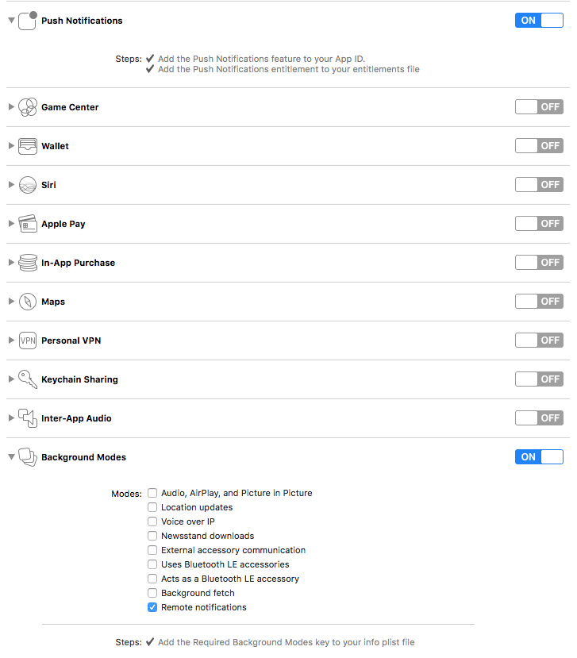

1. iOS集成接入指南
1.1. 版本提示
本指南使用的 SDK版本：V3.0.2，V3.1.0，V3.1.1版本
1.2. SDK 组成
Xg-Push-SDK-iOS-3.1.1
doc文件夹：信鸽 iOS SDK 开发指南demo文件夹：主要包含样例工程，信鸽 SDK 也在其中
1.3. 集成步骤
开发者可根据自己的需要自行选择手动集成或自动集成方式，推荐使用信鸽一键集成工具集成。
1.3.1. 手动集成
前往信鸽管理台注册 iOS 应用并获取
App ID和App Key注: App ID 对应应用
Access ID，App Key对应应用Access Key.下载信鸽 SDK, 解压缩
打开 demo 目录下的 sdk 文件夹，将XGPush.h以及libXG-SDK.a添加到工程
- 在
Build Phases下添加以下 Framework:
* CoreTelephony.framework
* SystemConfiguration.framework
* UserNotifications.framework
* libXG-SDK.a
* libz.tbd
* libsqlite3.0.tbd
添加完成以后,库的引用如下:

- 在工程配置和后台模式中打开推送,如下图

- 添加编译参数
-ObjC

注意：checkTargetOtherLinkFlagForObjc报错，是因为build setting中，Other link flags未添加-ObjC
在合适的时机调用启动信鸽的 API ,并根据需要实现
XGPushDelegate协议中的方法，开启推送服务- 启动信鸽服务，以下是在
AppDelegate中做演示：
@interface AppDelegate () <XGPushDelegate> @end -(BOOL)application:(UIApplication *)application didFinishLaunchingWithOptions:(NSDictionary *)launchOptions { [[XGPush defaultManager] startXGWithAppID:<#your AppID#> appKey:<#your appKey#> delegate:<#your delegate#>]; return YES; }- 在
AppDelegate中选择实现XGPushDelegate协议中的方法
- 启动信鸽服务，以下是在
/**
收到推送的回调
@param application UIApplication 实例
@param userInfo 推送时指定的参数
@param completionHandler 完成回调
*/
- (void)application:(UIApplication *)application
didReceiveRemoteNotification:(NSDictionary *)userInfo
fetchCompletionHandler:(void (^)(UIBackgroundFetchResult))completionHandler
{
[[XGPush defaultManager] reportXGNotificationInfo:userInfo];
completionHandler(UIBackgroundFetchResultNewData);
}
// iOS 10 新增回调 API
// App 用户点击通知
// App 用户选择通知中的行为
// App 用户在通知中心清除消息
// 无论本地推送还是远程推送都会走这个回调
#if __IPHONE_OS_VERSION_MAX_ALLOWED >= __IPHONE_10_0
- (void)xgPushUserNotificationCenter:(UNUserNotificationCenter *)center
didReceiveNotificationResponse:(UNNotificationResponse *)response
withCompletionHandler:(void (^)(void))completionHandler
{
[[XGPush defaultManager] reportXGNotificationResponse:response];
completionHandler();
}
// App 在前台弹通知需要调用这个接口
- (void)xgPushUserNotificationCenter:(UNUserNotificationCenter *)center
willPresentNotification:(UNNotification *)notification
withCompletionHandler:(void (^)(UNNotificationPresentationOptions))completionHandler
{
[[XGPush defaultManager] reportXGNotificationInfo:notification.request.content.userInfo];
completionHandler(UNNotificationPresentationOptionBadge | UNNotificationPresentationOptionSound | UNNotificationPresentationOptionAlert);
}
#endif
1.3.2. 自动集成
使用信鸽官网的一键集成工具，仅需3步即可完成 iOS XG SDK 的接入
第一步，登录 QQ（此账号下应包含需要配置的应用）

第二步，选择应用名称，点击 Open My Project ，打开工程项目的.xcodeproj 文件

注意：此步骤会自动将启动代码插入到AppDelegate类中
第三步，为 AppDelegate 类添加 XGPushDelegate 协议
@interface AppDelegate () <XGPushDelegate>
@end
1.4. 调试
开启Debug模式
打开Debug模式可以在终端看到详细的信鸽Debug信息，方便定位问题。
[代码示例]
//打开debug开关
[[XGPush defaultManager] setEnableDebug:YES];
实现 XGPushDelegate 协议
在调试阶段，建议实现协议中的以下两个方法，从而能得到更详细的调试信息
/**
@brief 监控信鸽推送服务地启动情况
@param isSuccess 信鸽推送是否启动成功
@param error 信鸽推送启动错误的信息
*/
- (void)xgPushDidFinishStart:(BOOL)isSuccess error:(nullable NSError *)error;
/**
@brief 向信鸽服务器注册设备token的回调
@param deviceToken 当前设备的token
@param error 错误信息
@note 当前的token已经注册过之后，将不会再调用此方法
*/
- (void)xgPushDidRegisteredDeviceToken:(nullable NSString *)deviceToken error:(nullable NSError *)error;
观察日志
如果 Xcode 控制台显示如下相似日志，表明客户端已经正确集成 SDK。
-[AppDelegate xgPushDidFinishStart:error:], result OK, error (null)
[xgpush] clientid is 331F8A86-CDF5-4C6F-BF8C-13EFB8EAD34E
package Size is 359
[xgpush]Current device token is c4294001507045547bfe64581eecb95f6d6a46c9cf9a9a0878233f6c0e8e3b8f
[xgpush info]msgLen's length is 108
[xgpush] 服务器返回码: 0
-[AppDelegate xgPushDidRegisteredDeviceToken:error:], result OK, error (null)
1.5. 推送测试工具
为了方便用户测试SDK接入是否成功，使用此工具可以从APNs服务器或信鸽服务器测试推送是否送达。
点击下载信鸽测试助手
如遇到推送收不到，请参考iOS常见问题文档。